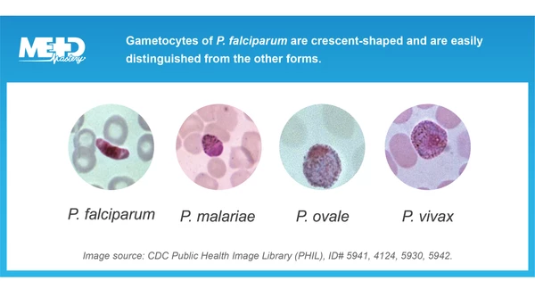
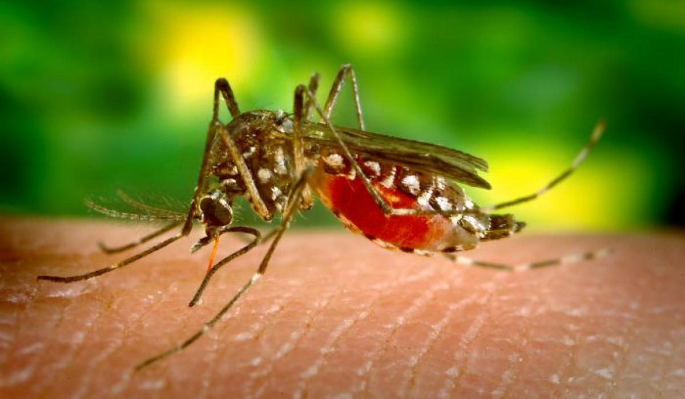

Malária: Definição e Contágio
Definição
- Infecção causada por protozoários do gênero Plasmodium
- Quatro espécies principais: P. falciparum, P. vivax, P. ovale, P. malariae
- Doença infecciosa transmitida por mosquitos
- Endêmica em regiões tropicais e subtropicais
Meio de Contágio
- Transmissão pela picada da fêmea do mosquito Anopheles
- Mosquito ingere sangue com gametócitos de pessoa infectada
- Após 1-2 semanas, esporozoítas são produzidos no mosquito
- Quando pica outra pessoa, inocula esporozoítas que atingem o fígado
- Também pode ocorrer por transfusão de sangue ou congenitamente

Diferentes espécies de Plasmodium visualizadas ao microscópio

Mosquito Anopheles - vetor da malária